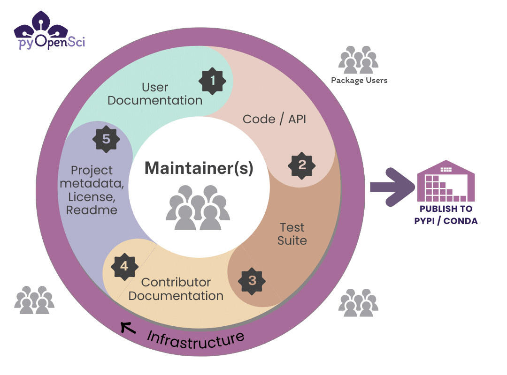

<link rel="stylesheet" href="../shared/slide-base.css">
<section data-slide="05-characteristics" aria-label="What helps a new contributor" class="slide" data-presenter="don">
  <div class="accent-bar-left"></div>
  <div class="content">
    <p class="eyebrow">What helped in 2023</p>
    <h1>What helps a new contributor</h1>
    <div class="grid">
      <ol class="chars"><li>Docs that answer real questions</li><li>A setup that works</li><li>Code checks with pre-commit and linting</li><li>Clear contribution and community rules</li><li>Tests and benchmarks you can run</li><li>Security practices you can check</li><li>Reliable packaging and distribution</li></ol>
      <figure><figcaption class="source">Source: pyOpenSci Python packaging guide</figcaption></figure>
    </div>
  </div>
  <style>
    
    section[data-slide="05-characteristics"] { background: linear-gradient(90deg, rgba(75,46,131,0.06), transparent 34%), var(--surface-primary); padding: var(--space-16) var(--space-20); }
    section[data-slide="05-characteristics"] .content { position: relative; z-index: var(--z-raised); display: flex; flex-direction: column; width: 100%; height: 100%; }
    section[data-slide="05-characteristics"] h1 {
      font-family: var(--font-display); font-size: var(--slide-title); font-weight: var(--font-extrabold);
      letter-spacing: var(--tracking-tight); line-height: var(--leading-tight); color: var(--text-brand);
      margin: var(--space-2) 0 var(--space-6);
    }
    section[data-slide="05-characteristics"] p, section[data-slide="05-characteristics"] li { font-size: var(--slide-body); line-height: var(--leading-relaxed); color: var(--text-primary); }
    section[data-slide="05-characteristics"] .lead { font-size: var(--slide-lead); }
    section[data-slide="05-characteristics"] .muted { color: var(--text-secondary); }
    section[data-slide="05-characteristics"] .source { margin-top: auto; padding-top: var(--space-4); }
    
    section[data-slide="05-characteristics"] .grid { flex: 1; display: grid; grid-template-columns: 1fr 1.1fr; gap: var(--space-12); align-items: center; }
    section[data-slide="05-characteristics"] .chars { list-style: none; counter-reset: c; }
    section[data-slide="05-characteristics"] .chars li { counter-increment: c; position: relative; padding-left: var(--space-12); margin-bottom: var(--space-4); font-size: var(--slide-body); line-height: var(--leading-relaxed); }
    section[data-slide="05-characteristics"] .chars li::before { content: counter(c); position: absolute; left: 0; top: -0.05em; font-family: var(--font-compressed); font-weight: var(--font-bold); font-size: var(--slide-subtitle); color: var(--color-gold-700); }
    section[data-slide="05-characteristics"] figure { margin: 0; display: flex; flex-direction: column; align-items: center; }
    section[data-slide="05-characteristics"] figure img { max-width: 100%; max-height: 62vh; object-fit: contain; }
    section[data-slide="05-characteristics"] figcaption { margin-top: var(--space-3); }
  </style>
</section>
